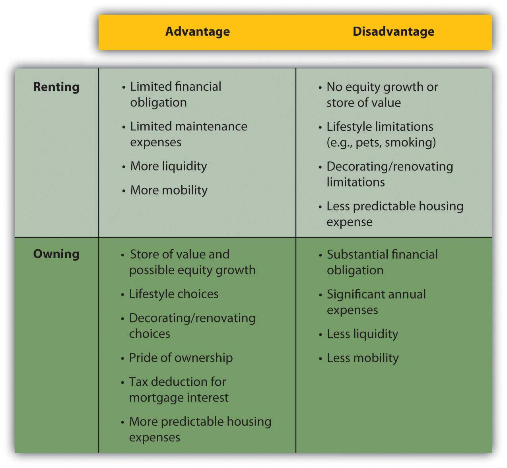
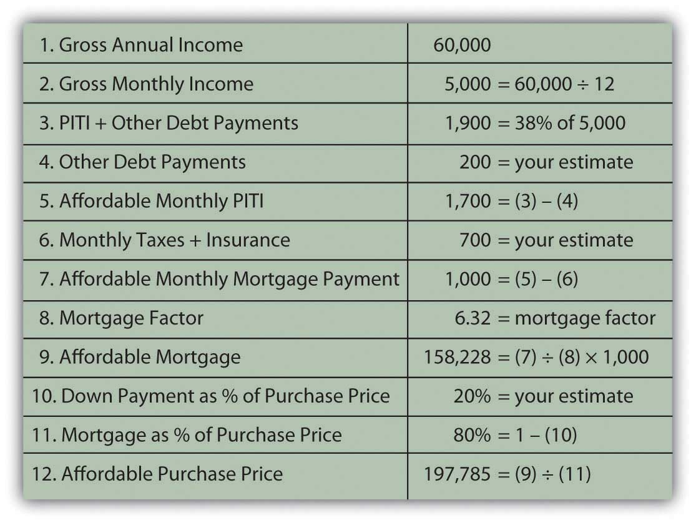
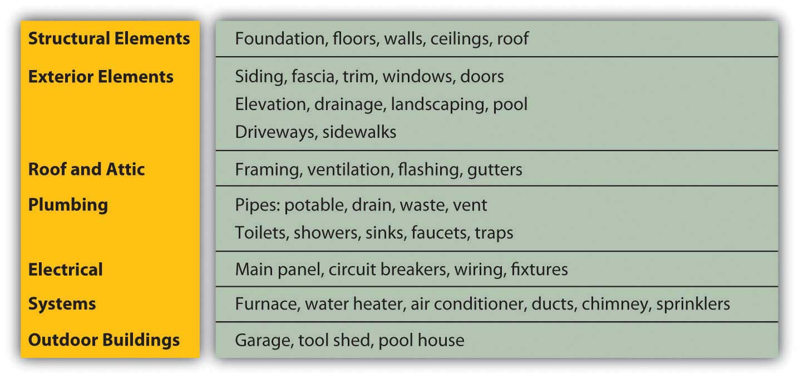
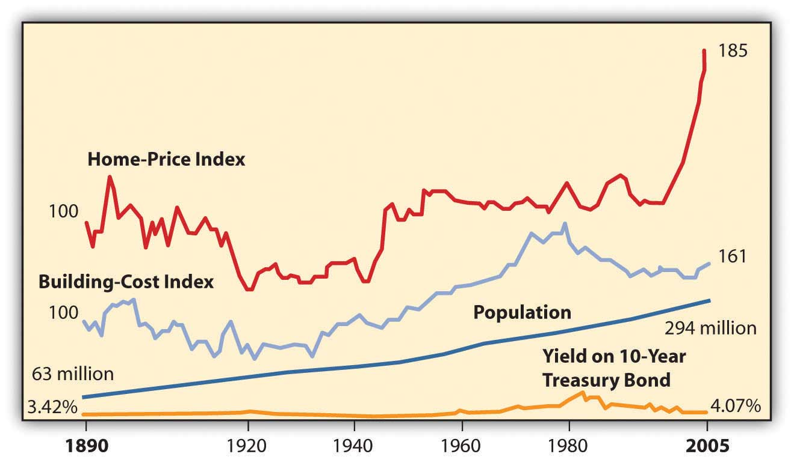

If you have already decided on a goal of home ownership, you have already compared the costs and benefits of the alternative, which is renting. Renting requires relatively few initial legal or financial commitments. The renter signs a lease that spells out the terms of the rental agreement: term, rent, terms of payments and fees, restrictions such as pets or smoking, and charges for damages. A renter is usually required to give the landlord a security deposit to cover the landlord’s costs of repairs or cleaning, as necessary, when the tenant moves out. If the deposit is not used, it is returned to the departing tenant (although without any interest earned).
Some general advantages and disadvantages of renting and owning are shown in Figure 9.2 "Renting versus Owning".
Figure 9.2 Renting versus Owning
The choice of whether to rent or to own follows the pattern of life stages. People rent early in their adult lives because they typically have fewer financial resources and put a higher value on mobility, usually to keep more career flexibility. Since incomes are usually low, the tax advantages of ownership don’t have much benefit.
As family size grows, the quality of life for dependents typically takes precedence, and a family looks for the added space and comfort of a home and its benefits as an investment. This is the mid-adult stage of accumulating assets and building wealth. As income rises, the tax benefit becomes more valuable, too.
Often, in retirement, with both incomes and family size smaller, older adults will downsize to an apartment, shedding responsibilities and financial commitments.
Home ownership decisions vary: some people just never want the responsibilities of ownership, while some just always want a place of their own.
Finding an apartment is much like finding a home in terms of assessing its attributes, comparing choices, and making a choice. Landlords, property managers, and agents all rent properties and use various media to advertise an available space. Since the rent for an apartment is a regular expense, financed from current income (not long-term debt), you need to find only the apartment and not the financing, which simplifies the process considerably.
Once you decide to own your home, you must choose the home to own, considering the different kinds of homes and of home ownership.
There are single- and multiple-unit dwellings, for example. A multiple-unit dwellingA residential building including more than one housing unit, such as a duplex, triplex, or apartment building. can be used to create rental income or to house extended family members, but this choice imposes the responsibilities of being a landlord and also limits privacy.
There are previously owned, new, and custom-built homes. Previously owned homes may require some renovation to make them comfortably modern and convenient. New and custom-built homes typically have more modern features and conveniences and require less maintenance and repair expense. Custom-built homes are built to the homeowners’ specifications.
Sales of existing single-family homes far outnumber sales of new and custom homes. In the month of February 2009, for example, 4.72 million existing homes were sold compared to 337,000 sales of new homes. The average price of a new house in February 2009 in the United States was $251,000.National Association of Home Builders, http://www.nahb.org/fileUpload_ details.aspx?contentTypeID=3&contentID=97096&subContentID=153510 (accessed November 23, 2009).
Mobile homesA manufactured home, usually under 1,000 sq. ft. in size. are large trailers fitted with utilities connections, which can be installed on permanent sites and used as residences. A mobile home may also be situated in a trailer park or mobile home community where the owner rents a lot. Mobile homes are often referred to as manufactured homes, and other examples of manufactured homes are prefabricated or modular homes, which are moved to a foundation site by trailer and then assembled.
In a condominiumAn ownership arrangement where individual housing units are owned by individual owners, while common spaces are owned by the condominium association of unit owners., the homeowner owns a unit in a multiple-unit dwelling, but the common areas of the building are owned and managed by the condominium owners’ association. Condo owners pay a fee to cover the costs of overall building maintenance and operating expenses for common areas.
Cooperative housingAn ownership arrangement where the right to inhabit living space is claimed by the purchase of shares in the cooperative ownership of a multi-unit dwelling. is a unit in a building or complex owned by a nonprofit association or a corporation for the residents’ use. Residents do not own the units, but rather own shares in the cooperative association, which entitles them to the right to dwell in its housing units.
Personal factors such as your age, family size, health, and career help you to answer some of the following key questions:
After ranking the importance of such attributes, you can use an attribute-scoring matrix to score your choices. After understanding exactly what you are looking for in a home, you should begin to think about how much house you can afford.
Before looking for a house that offers what you want, you need to identify a price range that you can afford. Most people use financing to purchase a home, so your ability to access financing or get a loan will determine the price range of the house you can buy. Since your home and your financing are long-term commitments, you need to be careful to try to include future changes in your thinking.
For example, Jill and Jack are both twenty-five years old, newly married, and looking to buy their first home. Both work and earn good incomes. The real estate market is strong, especially with mortgage rates relatively low. They buy a two-bedroom condo in a new development as a starter home.
Fast-forward five years. Jill is expecting their second child; while the couple is happy about the new baby, neither can imagine how they will all fit in their already cramped space. They would love to sell the condo and purchase a larger home with a yard for the kids, but the real estate market has slowed, mortgage rates have risen, and a plant closing last year has driven up unemployment in their area. Jill hasn’t worked outside the home since their first child was born two years ago—they are just getting by on one salary and a new baby will increase their expenses—making it even more difficult to think about financing a larger home.
A lender will look at your income, your current debts, and credit history to assess your ability to assume a mortgage. As discussed in Chapter 7 "Financial Management", your credit score is an important tool for the lender, who may also request verification of employment and income from your employer.
Lenders do their own calculations of how much debt you can afford, based on a reasonable percentage, usually about 33 percent, of your monthly gross income that should go toward your monthly housing costs, or principal, interest, taxes, and insurance (PITI)Principal, interest, taxes, and insurance are the costs of home ownership. PITI is usually calculated on a monthly basis in the process of determining the affordability of a mortgage.. If you have other debts, your PITI plus your other debt repayments should be no more than about 38 percent of your gross income. Those percentages will be adjusted for income level, credit score, and amount of the down payment.
Say the lender assumes that 38 percent of your monthly gross income (annual gross income divided by twelve) should cover your PITI plus any other debt payments. Subtracting your other debt payments and estimated cost of taxes and insurance leaves you with a figure for affordable monthly mortgage payments. Dividing that figure by the mortgage factor for your mortgage’s maturity and mortgage rate shows the affordable mortgage overall. Knowing what percentage your mortgage will be of the home’s purchase price, you can calculate the maximum purchase price of the home that you can afford. That affordable home purchase price is based on your gross income, other debts, taxes, insurance, mortgage rate, mortgage maturity, and down payment.
Figure 9.5 "Mortgage Affordability Calculation" shows an example of this calculation for a thirty-year, 6.5 percent mortgage.
Figure 9.5 Mortgage Affordability Calculation
These kinds of calculations give both you and your lender a much clearer idea of what you can afford. You may want to sit down with a potential lender and have this discussion before you do any serious house hunting, so that you have a price range in mind before you shop. Mortgage affordability calculators are also available online.
After understanding exactly what you are looking for in a home and what you can afford, you can organize your efforts and begin your search.
Typically, buyers use a realtorA salesperson for real estate, usually hired by the seller to help price, advertise, and show the property and negotiate the actual sale. and realty listings to identify homes for sale. A real estate broker can add value to your search by providing information about the house and property, the neighborhood and its schools, recreational and cultural opportunities, and costs of living.
Remember, however, that the broker or its agent, while helping you gather information and assess your choices, is working for the sellers and will be compensated by the seller when a sale is made. Consider paying for the services of a buyer’s agent, a fee-based real estate broker who works for the buyer to identify choices independently of the purchase. The real estate industry is regulated by state and federal laws as well as by self-regulatory bodies, and real estate agents must be licensed to operate.
Increasingly, sellers are marketing their homes directly to save the cost of using a broker. A real estate broker typically takes a negotiable amount up to 6 percent of the purchase price, from which it pays a commission to the real estate agent. “For sale by owner” sites on the Internet can make the exchange of housing information easier and more convenient for both buyers and sellers. For example, Web sites such as Picketfencepreview.com serve home sellers and buyers directly. Keep in mind, however, that sellers acting as their own brokers and agents are not licensed or regulated and may not be knowledgeable about federal and state laws governing real estate transactions, potentially increasing your risk.
After you narrow your search and choose a prospective home in your price range, you have the home inspected to assess its condition and project the cost of any repairs or renovations. Many states require a home inspection before signing a purchase agreement or as a condition of the agreement. A standard home inspection checklist, based on information from the National Association of Certified Home Inspectors, is shown in Figure 9.6 "Standard Home Inspection Checklist".
Figure 9.6 Standard Home Inspection Checklist
As with a car, it is best to hire a professional (a structural engineer, contractor, or licensed home inspector) to do the home inspection. For example, see the American Association of Home Inspectors at http://www.ashi.org/. A professional will be able to spot not only potential problems but also evidence of past problems that may have been fixed improperly or that may recur—for example, water in the basement or leaks in the roof. If there are problems, you will need an estimate for the cost of fixing them. If there are significant and immediate repair or renovation costs projected by the home’s condition, you may try to reduce the purchase price of the property by those costs. You don’t want any surprises after you buy the house, especially costly ones.
You will also want to do a title search, as required by your lender, to verify that there are no liensAn interest in a property granted to secure payment of debt. or claims outstanding against the property. For example, the previous owners may have had a dispute with a contractor and never paid his bill, and the contractor may have filed a lien or a claim against the property that must be resolved before the property can change hands. There are several other kinds of liens; for example, a tax lien is imposed to secure payment of overdue taxes.
A lawyer or a title search company can do the search, which involves checking the municipal or town records where a lien would be filed. A title search will also reveal if previous owners have deeded any rights—such as development rights or water rights, for example, or grants of right-of-way across the property—that would diminish its value.
Housing costs are determined by the price of the house and by the price of the debt that finances the house. House prices are determined by forces of supply and demand, which in turn are determined by macroeconomic circumstances.
When the economy is contracting and incomes are decreasing, and especially if unemployment rises and incomes become uncertain, buyers are hesitant to add the significant financial responsibility of new debt to their budgets. They tend to continue with their present arrangements or may try to move into cheaper housing, downsizing to a smaller house, an apartment, or condo to decrease operating expenses. When the economy is expanding, on the other hand, expectations of rising incomes may encourage buyers to be bolder with their purchasing decisions.
A house represents not only a housing expense but also an investment that can serve as a store of wealth. In theory, if a contraction creates a market with declining asset values, investors will seek out alternative investments, abandoning that market. In other words, if house prices decline, the house’s value as an investment will decline. Investors will seek other assets in which to store wealth to avoid the opportunity cost of making an investment that does not generate returns.
Housing markets are local, however. If the local economy is dominated by one industry or by one large employer, the housing market will be sensitive to the fate of that industry or employer. If a location has value independent of the local economy, such as value as a vacation or retirement location, that value can offset local concerns. In that case, housing prices may be less sensitive to the local economy.
Since a house is an investment, the home buyer is concerned about its expected future value. Future value is not easy to predict, however, as housing markets have some volatility. In extreme periods, for example between 2004 and 2009, there was extreme volatility (read more on the real estate bubble in Chapter 13 "Behavioral Finance and Market Behavior"). Thus, depending on how long you intend to own the home, it may or may not be realistic to try to predict price trends based on macroeconomic cycles or factors. Some areas may seem to be always desirable, such as Manhattan’s East Side or Malibu, California, but a severe economic shock or boom can affect prices in those areas as well.
Figure 9.7 "U.S. Housing Prices 1890–2005 (Inflation-Adjusted Dollars)" shows housing prices in the United States from 1890 to 2005 in inflation-adjusted dollars.
Figure 9.7 U.S. Housing Prices 1890–2005 (Inflation-Adjusted Dollars)
The data in Figure 9.7 "U.S. Housing Prices 1890–2005 (Inflation-Adjusted Dollars)" display some remarkable stability to housing prices. For example, for the half-century from the end of World War II until the mid-1990s, housing prices were fairly flat, as they were in the period from around 1920 to 1940. This suggests that while a house may be used to store value, it may not generate a real increase in wealth. It seems that over the long term, housing prices are not highly sensitive to economic cycles, population growth, building costs, or even interest rates.
Since the early 2000s, however, housing prices have soared. Most economists attribute this to a sustained period of low unemployment rates, low mortgage rates, and economic growth. As bubbles do, this one eventually burst in 2007 as the economy slumped into a recession. Housing demand and prices fell, even with low mortgage rates, creating a real buyer’s market. Many economists attribute the severity of the slump to the banking crisis that froze the credit markets, because most housing purchases are financed with debt.
Ability to buy a house rests on the ability to finance the purchase, to provide a down payment, and to borrow. That ability is determined by the buyer’s personal situation (e.g., stability of employment or income, credit history) and by macroeconomic events such as interest rate levels, expected inflation, and liquidity in the credit markets. If interest rates and inflation are low and there is liquidity in the credit markets, it will be easier for buyers to borrow than if inflation and interest rates are high and the credit market is illiquid. Demand for housing thus relies on the availability of credit for the housing market.
Different building structures are
Different ownership structures include
The buyer’s inspection checklist includes
Housing prices may be affected by business cycles as they affect
Housing prices are affected by the availability of home financing, which in turn depends on
Perform an attribute analysis of your projected wants and needs as a homeowner. Begin by prioritizing the following personal and microeconomic factors in terms of their importance to you in deciding when to buy a home.